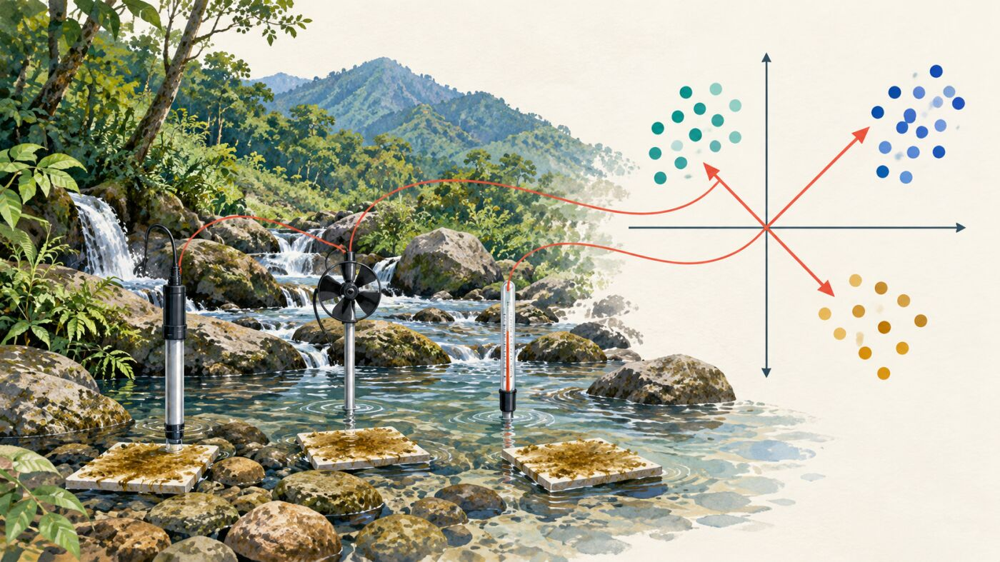
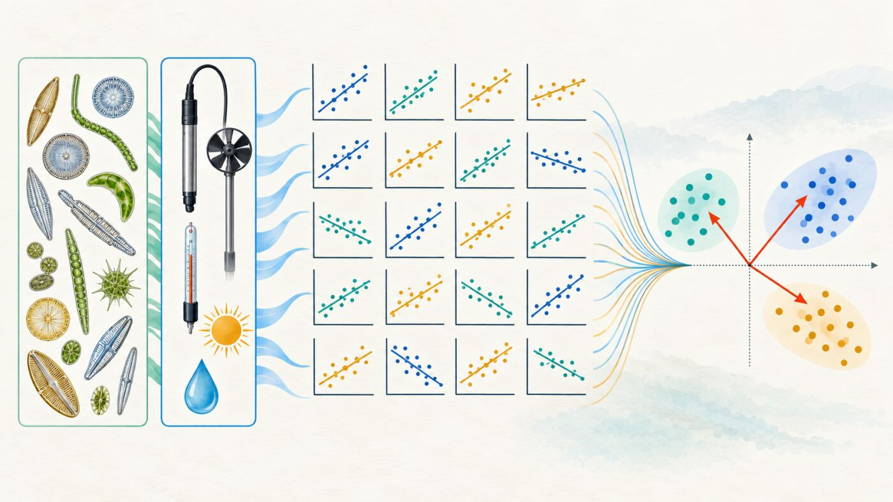
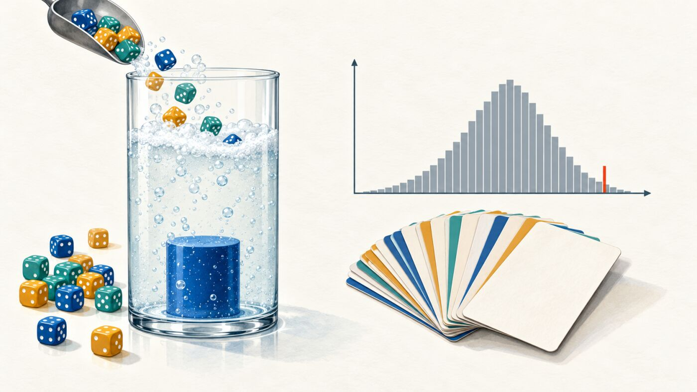
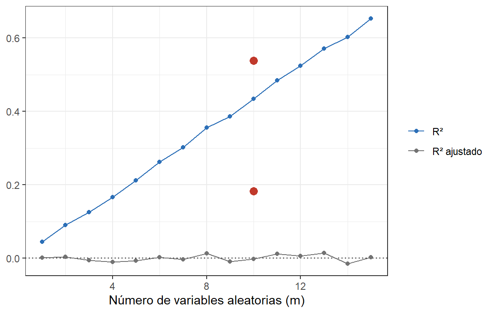
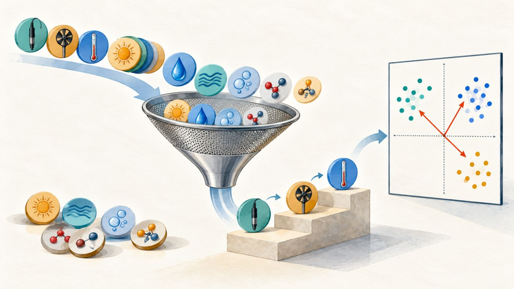
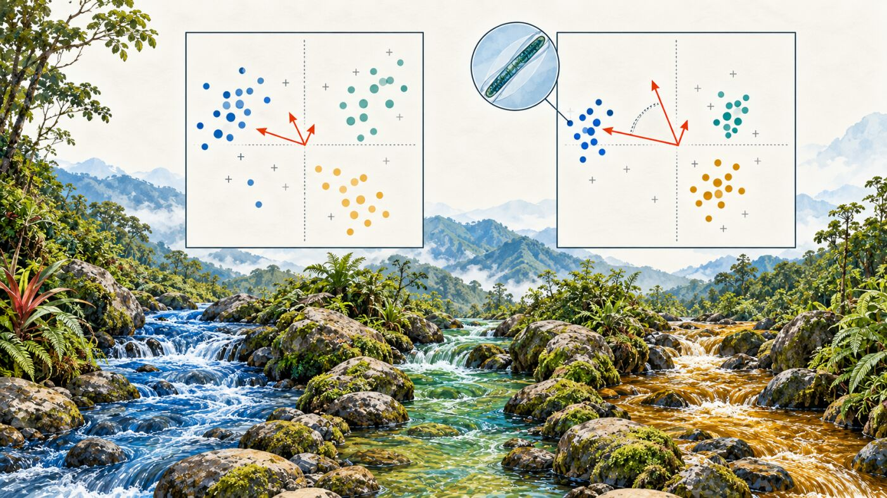
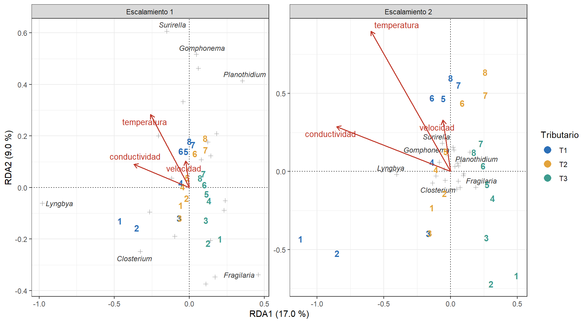
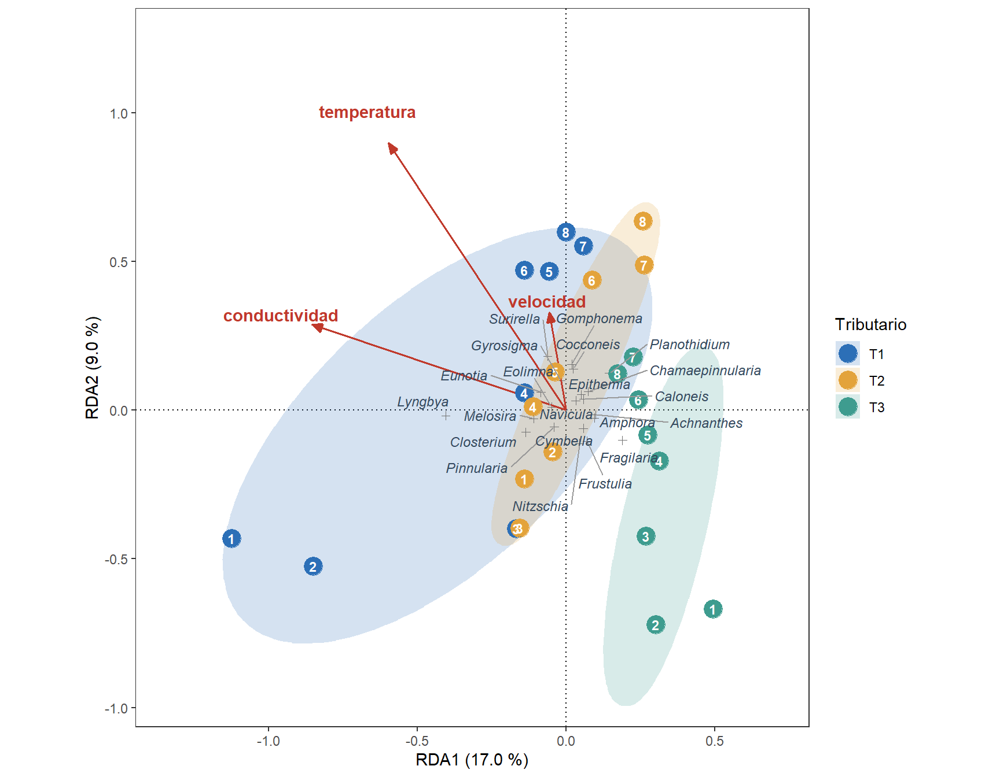
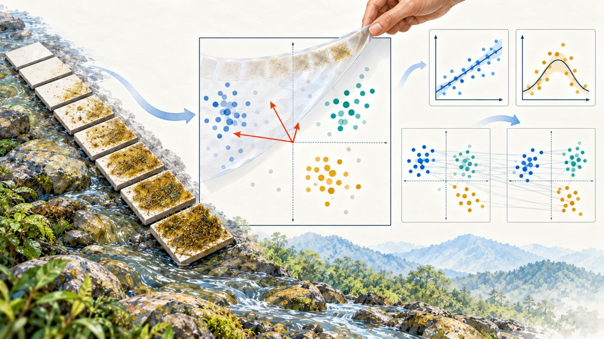
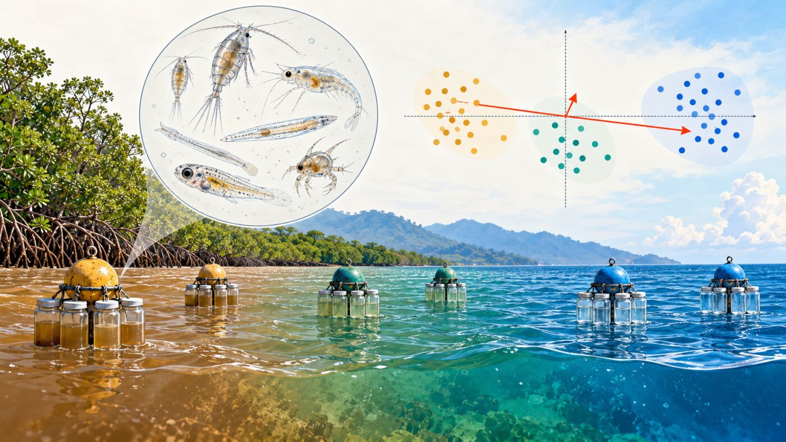

Taller 9. Ordenación Restringida: RDA y CCA
Materiales requeridos para el taller en clase
En el siguiente enlace se puede descargar el archivo comprimido del taller, con las bases de datos de microalgas perifíticas y de mesozooplancton estuarino (📰 Taller 9. Ordenación restringida: RDA y CCA).
Nota: una vez se descarguen los materiales, se requiere descomprimirlos antes de realizar cualquier procedimiento y seguir las orientaciones del docente para realizar los ejercicios requeridos.
Diapositivas en vivo - Slides.com

Los temas de profundización y el cuestionario de refuerzo, están en la guía complementaria y el Cuestionario de profundización al final del taller.
Objetivos del taller
Este taller acompaña la sesión del sábado 31 de octubre en la mañana (S11) y la presentación 09 («Ordenación restringida: RDA y CCA»). Usa las mismas matrices de microalgas de los Talleres 7 y 8: en el Taller 7 se ordenó el ambiente (X) y en el Taller 8 la comunidad (Y); ahora X restringe la ordenación de Y. Al terminar, se podrá:
- Explicar en qué se diferencia una ordenación restringida (análisis directo del gradiente) de una no restringida con variables proyectadas (
envfit()). - Ajustar una RDA con
rda()sobre la matriz de Hellinger e interpretar la partición de la inercia, el R² y el R² ajustado. - Probar el modelo con permutaciones (
anova()global, por ejes y por términos) y diagnosticar la colinealidad con el VIF. - Seleccionar variables con
ordistep()yordiR2step(), y justificar el modelo parsimonioso. - Leer un triplot con los escalamientos 1 y 2, controlar una covariable con una RDA parcial y comparar la RDA con la CCA.
NotaBases de datos
- Microalgas (
Microalgas.xlsx): microalgas perifíticas en tres tributarios del río Gaira, Sierra Nevada de Santa Marta (Osorio Ávila et al., 2015). Cada fila es un sustrato artificial en un tributario (T1 a T3) y una visita semanal de colonización (1 a 8). - Plancton (hoja
Riquezadeplancton.xlsx): mesozooplancton del estuario del golfo de Urabá, Caribe colombiano (Vargas-Ospina et al., 2025). Se usa en el estudio de caso.
Código
# Librerías requeridas
library(tidyverse)
library(readxl)
library(kableExtra)
library(vegan)
library(ggrepel)
library(ggforce) # elipses por grupo en el triplot
# Paletas del módulo
col_trib <- c(T1 = "#2C6FB7", T2 = "#E3A33B", T3 = "#3E9C8F")
col_zona <- c(Fluvial = "#A6761D", Estuarina = "#66A61E",
Marina = "#1F78B4")
# Números con decimales fijos para el texto (0.180 y no 0.18)
f1 <- function(x) formatC(x, format = "f", digits = 1)
f2 <- function(x) formatC(x, format = "f", digits = 2)
f3 <- function(x) formatC(x, format = "f", digits = 3)
# Números con coma decimal para los párrafos de reporte
coma <- function(x, d = 2) formatC(x, format = "f", digits = d, decimal.mark = ",")
# Valor p de la primera fila de una tabla de anova()
p_de <- function(a, fila = 1) a$`Pr(>F)`[fila]
# Nombres legibles de las variables ambientales para el texto y las figuras
nombre_x <- c(Amonio = "amonio", Nitrito = "nitrito",
Nitrato = "nitrato", Oxigeno = "oxígeno",
pH = "pH", Conductividad = "conductividad", Caudal = "caudal",
Vel_Corriente = "velocidad", Luz = "luz", Temp = "temperatura")
var_txt <- function(v) paste(nombre_x[sub("^\\+ ", "", v)], collapse = " + ")Código
# Matrices F, X y Y de microalgas (igual que en la Parte 4 del Taller 5)
alg <- read_excel("Microalgas.xlsx", sheet = "Microalgas") %>%
rename(Fragilaria = Fragillaria, Nitzschia = Nitzchia,
Surirella = Surilella, Gyrosigma = Girosigma,
Achnanthes = Achnantes) %>%
mutate(Tributario = factor(Tributario),
Visita = factor(as.integer(sub(".*\\.", "", Cod)))) # T1.3 → 3
F_alg <- alg %>% select(Cod, Tributario, Visita)
X_alg <- alg %>% select(Amonio:Temp)
Y_alg <- alg %>% select(Fragilaria:Pinnularia)
# Y con Hellinger (Taller 5) y X con log10(x + 1) salvo el pH (Taller 7)
Y_hel <- decostand(Y_alg, method = "hellinger")
X_log <- X_alg %>% mutate(across(-pH, ~ log10(.x + 1)))
# Control: mismas filas en las tres matrices
c(F = nrow(F_alg), X = nrow(X_log), Y = nrow(Y_hel)) F X Y
24 24 24 Las dos matrices llegan a este taller ya preparadas: Y con Hellinger, como en el PCA de Hellinger del Taller 8, y X con la misma transformación logarítmica del PCA ambiental del Taller 7 (el pH ya está en escala logarítmica y no se transforma). En una RDA las unidades de X no importan, porque cada género se regresa sobre las X; lo que sí importa es su forma: la transformación reduce la asimetría de variables como el caudal o la luz y el peso de sus valores extremos.
Antes de empezar: del análisis indirecto al directo
En los Talleres 7 y 8 la ordenación se construyó con una sola matriz, y la otra se proyectó después para interpretar (envfit(), ordisurf()). Es un análisis indirecto del gradiente: primero el patrón, luego la búsqueda de variables que lo acompañen. La ordenación restringida invierte el orden: los ejes se construyen a partir de X, y la pregunta cambia (presentación 09, diap. 4).
| Análisis indirecto (Talleres 7 y 8) | Análisis directo (este taller) | |
|---|---|---|
| Pregunta | ¿Cuál es el patrón principal de la comunidad y qué variables se le asocian? | ¿Cuánta variación de la comunidad explican las X y cuáles bastan? |
| Ejes | Resumen solo Y | Cada eje es una combinación lineal de X |
| X | Se proyecta encima, una variable a la vez | Entra en el modelo, todas a la vez |
| Prueba | Una por variable (envfit()), con ajuste por pruebas múltiples |
Una global para el modelo, más pruebas por ejes y por términos |
| Se reporta | Estrés o % por eje, y r² de cada variable | R² ajustado y p por permutación |
Las dos técnicas restringidas del taller se diferencian en el modelo de respuesta de las especies:
| Técnica | Versión restringida de | Respuesta de las especies | Matriz Y | Cuándo |
|---|---|---|---|---|
| RDA (análisis de redundancia) | PCA | Lineal | Transformada (aquí, Hellinger) | Gradiente corto (DCA1 < 3 DE) |
| CCA (análisis de correspondencias canónicas) | CA | Unimodal | Conteos crudos (distancia chi-cuadrado) | Gradiente largo (DCA1 > 4 DE) |
En el Taller 8, el primer eje del DCA de las microalgas midió 1.6 DE: gradiente corto. La RDA es la técnica principal y la CCA se usa como contraste en la Parte 5.
Parte 1 — Del envfit a la ordenación restringida: la RDA completa

Pregunta: ¿Cuánto de la composición de microalgas explican, en conjunto, las 10 variables ambientales?
Por qué no bastan las pruebas por separado
En el Taller 7 se ajustaron los 21 géneros sobre el PCA ambiental (21 pruebas; ninguna se sostuvo con Holm), y en el Taller 8 las 10 variables sobre el NMDS (10 pruebas; solo la conductividad se sostuvo). Ninguna de esas pruebas responde la pregunta de conjunto: ¿qué fracción de la variación de Y explica X? Cada una mira una variable sobre un espacio que ya estaba fijado por la otra matriz. La RDA responde con un solo modelo y una sola prueba global.
La RDA en tres pasos
La RDA es una regresión múltiple de cada género sobre X, seguida de un PCA de los valores ajustados (diap. 6):
- Se linealiza Y (Hellinger).
- Se regresa cada uno de los 21 géneros sobre las 10 X y se guardan los valores ajustados (Ŷ): la parte de Y que X puede predecir.
- Se hace un PCA de Ŷ. Sus ejes son los ejes restringidos (RDA1, RDA2…). El PCA de los residuales da los ejes no restringidos (PC1, PC2…).
Se comprueba a mano con lm() y prcomp():
Código
# Pasos 2 y 3 a mano: regresión de cada género centrado y PCA de los valores ajustados
Y_c <- scale(as.matrix(Y_hel), scale = FALSE)
Y_aj <- fitted(lm(Y_c ~ ., data = X_log))
ev_mano <- prcomp(Y_aj)$sdev^2
# RDA con todas las variables
rda_full <- rda(Y_hel ~ ., data = X_log)
# Los tres primeros autovalores coinciden
rbind(A_mano = ev_mano[1:3], rda = unname(eigenvals(rda_full)[1:3])) [,1] [,2] [,3]
A_mano 0.02780699 0.02011112 0.01018861
rda 0.02780699 0.02011112 0.01018861Los autovalores coinciden: la RDA no es una técnica misteriosa, sino 21 regresiones y un PCA. Por eso hereda los problemas de la regresión múltiple: sobreajuste cuando hay muchas X para pocas muestras y colinealidad entre las X (Partes 2 y 3).
La salida de rda()
Código
# Resumen de la RDA completa
rda_full
Call: rda(formula = Y_hel ~ Amonio + Nitrito + Nitrato + Oxigeno + pH +
Conductividad + Caudal + Vel_Corriente + Luz + Temp, data = X_log)
Inertia Proportion Rank
Total 0.14283 1.00000
Constrained 0.07680 0.53771 10
Unconstrained 0.06603 0.46229 13
Inertia is variance
Eigenvalues for constrained axes:
RDA1 RDA2 RDA3 RDA4 RDA5 RDA6 RDA7 RDA8
0.027807 0.020111 0.010189 0.005513 0.004603 0.003489 0.001998 0.001754
RDA9 RDA10
0.000874 0.000465
Eigenvalues for unconstrained axes:
PC1 PC2 PC3 PC4 PC5 PC6 PC7 PC8
0.028640 0.015425 0.007845 0.004541 0.002616 0.002203 0.001794 0.001060
PC9 PC10 PC11 PC12 PC13
0.000867 0.000484 0.000303 0.000201 0.000051 Código
# Partición de la inercia para el texto
inercia_tot <- rda_full$tot.chi
pct_restr <- 100 * rda_full$CCA$tot.chi / inercia_tot
n_rda <- rda_full$CCA$rank
n_pc <- rda_full$CA$rankLa salida reparte la inercia total (0.143, la varianza total de la matriz de Hellinger) en dos partes:
- Restringida (Constrained): el 53.8 % de la inercia, repartido en 10 ejes RDA (uno por cada X). Es el R² de la RDA.
- No restringida (Unconstrained): el 46.2 % restante, en 13 ejes PC: la variación de la comunidad que las X no explican.
A primera vista, el ambiente explicaría más de la mitad de la composición. La Parte 2 muestra por qué esa cifra está inflada.
NotaSitios: «wa» o «lc»
rda() da dos coordenadas para los sitios restringidos: las lc (linear combinations), que son la combinación de X que define cada eje, y las wa (weighted averages), que son los promedios ponderados de las especies. scores(display = "sites") entrega las wa; display = "lc", las lc. Con pocas X y un buen ajuste se parecen; en este taller se grafican las wa, como hace plot() de vegan por defecto.
Para discutir: si el patrón más fuerte de la comunidad (el PC1 del Taller 8) no dependiera de ninguna X, ¿aparecería en los ejes RDA o en los ejes PC? ¿Qué mostraría entonces la RDA que el NMDS no muestra?
Parte 2 — R², R² ajustado y pruebas por permutación

Pregunta: ¿Es real el 53.8 % explicado, o una consecuencia de usar 10 variables para 24 muestras?
R² y R² ajustado
Código
# R² y R² ajustado (Ezekiel) de la RDA completa
R2_full <- RsquareAdj(rda_full)
c(R2 = R2_full$r.squared, R2_ajustado = R2_full$adj.r.squared) R2 R2_ajustado
0.5377106 0.1821034 El R² de la RDA es la fracción restringida (0.538). El R² ajustado corrige por el número de variables (m) y de muestras (n):
\[ R^2_{aj} = 1 - (1 - R^2)\,\frac{n - 1}{n - m - 1} = 1 - (1 - 0.538)\,\frac{23}{13} = 0.182 \]
Con 10 variables para 24 muestras, el ambiente explica en realidad alrededor del 18.2 % de la composición, no el 53.8 %.
El R² sin ajustar crece con cualquier X
Se puede ver el problema con variables que no tienen nada que ver con las microalgas: números al azar. Se ajustan RDA con 1 a 15 variables aleatorias, 100 veces para cada número de variables:
Código
# RDA de Y_hel sobre m variables aleatorias (100 repeticiones por cada m)
set.seed(2026)
ruido <- map_dfr(1:15, function(m) {
r2 <- replicate(100, {
X_azar <- as.data.frame(matrix(rnorm(nrow(Y_hel) * m), ncol = m))
unlist(RsquareAdj(rda(Y_hel ~ ., data = X_azar)))
})
tibble(m = m, R2 = mean(r2["r.squared", ]), R2_aj = mean(r2["adj.r.squared", ]))
})
r2_azar10 <- ruido$R2[ruido$m == 10]Código
# R² y R² ajustado frente al número de variables aleatorias
ruido %>%
pivot_longer(c(R2, R2_aj), names_to = "Medida", values_to = "Valor") %>%
ggplot(aes(m, Valor, color = Medida)) +
geom_hline(yintercept = 0, linetype = 3) +
geom_line() + geom_point() +
annotate("point", x = 10, y = c(R2_full$r.squared, R2_full$adj.r.squared),
color = "#C0392B", size = 3) +
scale_color_manual(values = c(R2 = "#2C6FB7", R2_aj = "grey45"),
labels = c("R²", "R² ajustado")) +
labs(x = "Número de variables aleatorias (m)", y = NULL, color = NULL) +
theme_bw()
Con 10 variables al azar, el R² promedio ya es 0.43; el ambiente real llega a 0.54. El R² ajustado de las variables aleatorias se queda alrededor de cero, mientras que el del ambiente es 0.182: esa es la parte que no se explica por haber metido muchas columnas.
Prueba global, por ejes y por términos
La significancia se prueba con permutaciones: se reordenan las filas de Y y se recalcula el estadístico F muchas veces. No se supone normalidad multivariada.
Código
# Prueba global de la RDA completa (999 permutaciones)
set.seed(2026)
glob_full <- anova(rda_full, permutations = how(nperm = 999))
glob_fullPermutation test for rda under reduced model
Permutation: free
Number of permutations: 999
Model: rda(formula = Y_hel ~ Amonio + Nitrito + Nitrato + Oxigeno + pH + Conductividad + Caudal + Vel_Corriente + Luz + Temp, data = X_log)
Df Variance F Pr(>F)
Model 10 0.076803 1.5121 0.06 .
Residual 13 0.066031
---
Signif. codes: 0 '***' 0.001 '**' 0.01 '*' 0.05 '.' 0.1 ' ' 1Código
# Prueba de cada eje y de cada término (efecto marginal: después de las demás X)
set.seed(2026)
ejes_full <- anova(rda_full, by = "axis", permutations = how(nperm = 999))
set.seed(2026)
marg_full <- anova(rda_full, by = "margin", permutations = how(nperm = 999))
ejes_full[1:3, ]Permutation test for rda under reduced model
Forward tests for axes
Permutation: free
Number of permutations: 999
Model: rda(formula = Y_hel ~ Amonio + Nitrito + Nitrato + Oxigeno + pH + Conductividad + Caudal + Vel_Corriente + Luz + Temp, data = X_log)
Df Variance F Pr(>F)
RDA1 1 0.027807 5.4746 0.184
RDA2 1 0.020111 3.9594 0.342
RDA3 1 0.010189 2.0059 0.939Código
marg_full %>% arrange(`Pr(>F)`) %>% head(3)Permutation test for rda under reduced model
Marginal effects of terms
Permutation: free
Number of permutations: 999
Model: rda(formula = Y_hel ~ Amonio + Nitrito + Nitrato + Oxigeno + pH + Conductividad + Caudal + Vel_Corriente + Luz + Temp, data = X_log)
Df Variance F Pr(>F)
Temp 1 0.0074653 1.4697 0.181
Conductividad 1 0.0075921 1.4947 0.191
pH 1 0.0062380 1.2281 0.258Código
# La prueba global con más permutaciones
set.seed(2026)
glob_9999 <- anova(rda_full, permutations = how(nperm = 9999))| Prueba | Pregunta | Resultado | Lectura |
|---|---|---|---|
| Global | ¿Explica X alguna parte de Y? | F = 1.51; p = 0.060 | En la frontera del 5 % |
Por ejes (by = "axis") |
¿Qué ejes son interpretables? | RDA1: p = 0.184 | Ningún eje se sostiene solo |
Por términos (by = "margin") |
¿Aporta cada X después de las demás? | La menor: Temp, p = 0.181 | Las X se reparten la misma varianza |
ImportanteUn p en la frontera
Con set.seed(2026) la prueba global da p = 0.060; la presentación 09 (diap. 9), con set.seed(123), reporta p = 0.044. Con 9 999 permutaciones, p = 0.051. Un p por permutación es una estimación: con 999 permutaciones, su error es de unas ±0.007 cuando el p real ronda 0.05. La lectura que se sostiene con cualquier semilla es que el modelo completo apenas se distingue del azar: con 10 X para 24 muestras, el poco ajuste real se diluye en muchos ejes y en variables que se reparten la misma información. Por eso no se interpreta el modelo completo, sino uno parsimonioso (Parte 3).
Para discutir: en un estudio de comunidades bentónicas con 15 estaciones y 12 variables sedimentarias, ¿qué R² ajustado se esperaría aunque ninguna variable importara? ¿Qué se haría antes de ajustar la RDA?
Parte 3 — Colinealidad y selección de variables

Pregunta: ¿Qué variables cuentan la misma historia, y cuáles bastan para explicar la composición?
Factor de inflación de la varianza (VIF)
El VIF de una variable mide cuánto se infla la varianza de su coeficiente porque las demás X ya la predicen: VIF = 1 / (1 − R²), con el R² de esa X regresada sobre las demás.
Código
# VIF de la RDA completa
vif_full <- sort(vif.cca(rda_full), decreasing = TRUE)
tibble(Variable = names(vif_full), VIF = unname(vif_full)) %>%
kbl(booktabs = TRUE, digits = 2) %>%
kable_classic(full_width = F) %>%
row_spec(0, bold = TRUE) %>%
row_spec(which(vif_full > 5), background = "#FDEBD0")| Variable | VIF |
|---|---|
| Conductividad | 8.55 |
| Caudal | 8.20 |
| Vel_Corriente | 5.13 |
| Temp | 2.54 |
| Luz | 2.41 |
| Nitrito | 2.34 |
| Nitrato | 1.61 |
| pH | 1.55 |
| Amonio | 1.49 |
| Oxigeno | 1.23 |
Código
# Correlaciones entre las tres variables hidráulicas
cor_hid <- cor(X_log[, c("Conductividad", "Caudal", "Vel_Corriente")])
round(cor_hid, 2) Conductividad Caudal Vel_Corriente
Conductividad 1.00 0.83 0.68
Caudal 0.83 1.00 0.86
Vel_Corriente 0.68 0.86 1.00Ninguna variable supera el umbral de colinealidad grave (VIF > 10), pero 3 pasan de 5: la conductividad (8.55), el caudal (8.20) y la velocidad de la corriente (5.13). Las tres cuentan una historia parecida: conductividad y caudal tienen r = 0.83, y caudal y velocidad, r = 0.86. Ese reparto explica que ninguna X saliera significativa en la prueba por términos de la Parte 2.
TipNo eliminar a ciegas
Quitar la variable de mayor VIF es una regla mecánica que puede eliminar a la que mejor explica la comunidad. Se deja que la selección decida cuál de las colineales entra, y después se revisa el VIF del modelo elegido.
Dos criterios de selección: ordistep() y ordiR2step()
Las dos funciones parten del modelo nulo (sin X) y agregan, en cada paso, la variable que más aporta. Difieren en el criterio para detenerse:
Código
# Modelo nulo
rda0 <- rda(Y_hel ~ 1, data = X_log)
# ordistep(): avanza mientras la variable que entra tenga p < 0.05
set.seed(2026)
sel_p <- ordistep(rda0, scope = formula(rda_full),
permutations = how(nperm = 999), trace = 0)
sel_p$anova Df AIC F Pr(>F)
+ Conductividad 1 -46.682 2.8824 0.010 **
+ Vel_Corriente 1 -47.204 2.3266 0.035 *
+ Temp 1 -47.930 2.4056 0.026 *
---
Signif. codes: 0 '***' 0.001 '**' 0.01 '*' 0.05 '.' 0.1 ' ' 1Código
# ordiR2step(): avanza mientras el R² ajustado crezca sin superar el del modelo completo
set.seed(2026)
sel_r2 <- ordiR2step(rda0, scope = formula(rda_full),
permutations = how(nperm = 999), trace = 0)
sel_r2$anova R2.adj Df AIC F Pr(>F)
+ Conductividad 0.075652 1 -46.682 2.8824 0.011 *
+ Vel_Corriente 0.128219 1 -47.204 2.3266 0.037 *
<All variables> 0.182103
---
Signif. codes: 0 '***' 0.001 '**' 0.01 '*' 0.05 '.' 0.1 ' ' 1Código
# Hacia atrás, desde el modelo completo
set.seed(2026)
sel_atras <- ordistep(rda_full, permutations = how(nperm = 999), trace = 0)
formula(sel_atras)Y_hel ~ Conductividad + Vel_Corriente + Temp
attr(,"variables")
list(Y_hel, Conductividad, Vel_Corriente, Temp)
attr(,"factors")
Conductividad Vel_Corriente Temp
Y_hel 0 0 0
Conductividad 1 0 0
Vel_Corriente 0 1 0
Temp 0 0 1
attr(,"term.labels")
[1] "Conductividad" "Vel_Corriente" "Temp"
attr(,"order")
[1] 1 1 1
attr(,"intercept")
[1] 1
attr(,"response")
[1] 1Código
# R² ajustado de los dos modelos candidatos
r2_dos <- RsquareAdj(rda(Y_hel ~ Conductividad + Vel_Corriente, data = X_log))$adj.r.squared
r2_tres <- RsquareAdj(rda(Y_hel ~ Conductividad + Vel_Corriente + Temp, data = X_log))$adj.r.squared
c(dos_variables = r2_dos, tres_variables = r2_tres, completo = R2_full$adj.r.squared) dos_variables tres_variables completo
0.1282188 0.1829084 0.1821034 | Paso | Variable | ordistep() |
ordiR2step() |
|---|---|---|---|
| 1 | Conductividad | F = 2.88; p = 0.010 | Entra (R² aj. = 0.076) |
| 2 | Velocidad de la corriente | F = 2.33; p = 0.035 | Entra (R² aj. = 0.128) |
| 3 | Temperatura | F = 2.41; p = 0.026 | No entra: llevaría el R² aj. a 0.183, por encima del modelo completo (0.182) |
Los dos criterios dan dos modelos. ordistep() usa el valor p y es más permisivo: llega a conductividad + velocidad + temperatura, el mismo trío que se obtiene hacia atrás desde el modelo completo. ordiR2step() aplica la regla de Blanchet et al. (2008): no acepta un modelo que explique más que el completo, porque eso indica sobreajuste. Se detiene en conductividad + velocidad (R² aj. = 0.128).
La diferencia entre los dos modelos es de 0.055 en el R² ajustado. En este taller se sigue con el modelo de tres variables, como la presentación 09, porque la temperatura tiene una razón ecológica (el Taller 8 la mostró ligada al patrón de la comunidad) y su aporte condicional es significativo; se declara que el criterio de Blanchet lo habría detenido en dos.
¿Selecciona la RDA lo mismo que destacó envfit?
Se recupera el NMDS y el envfit() del Taller 8 (mismas semillas) para comparar:
Código
# NMDS y envfit del Taller 8
set.seed(2026)
nmds <- metaMDS(Y_alg, distance = "bray", k = 2, trymax = 100, trace = 0)
set.seed(2026)
ef_amb <- envfit(nmds, X_alg, permutations = 999)
# Prueba marginal de cada variable en el modelo de tres variables
rda_pars <- rda(Y_hel ~ Conductividad + Vel_Corriente + Temp, data = X_log)
set.seed(2026)
marg_pars <- anova(rda_pars, by = "margin", permutations = how(nperm = 999))
vars <- c("Conductividad", "Temp", "Vel_Corriente", "Caudal")
tibble(Variable = vars,
r2_envfit = unname(ef_amb$vectors$r[vars]),
p_envfit = unname(ef_amb$vectors$pvals[vars]),
Entra = c("1.ª", "3.ª", "2.ª", "No entra"),
F_marginal = c(marg_pars[vars[1:3], "F"], NA),
p_marginal = c(marg_pars[vars[1:3], "Pr(>F)"], NA)) %>%
kbl(booktabs = TRUE, digits = c(0, 2, 3, 0, 2, 3),
col.names = c("Variable", "r² (envfit)", "p (envfit)", "ordistep", "F marginal", "p marginal")) %>%
kable_classic(full_width = F) %>%
row_spec(0, bold = TRUE)| Variable | r² (envfit) | p (envfit) | ordistep | F marginal | p marginal |
|---|---|---|---|---|---|
| Conductividad | 0.49 | 0.003 | 1.ª | 4.12 | 0.005 |
| Temp | 0.39 | 0.011 | 3.ª | 2.41 | 0.032 |
| Vel_Corriente | 0.09 | 0.389 | 2.ª | 2.88 | 0.012 |
| Caudal | 0.15 | 0.212 | No entra | NA | NA |
Código
# Velocidad media de la corriente por tributario (m/s)
vel_trib <- tapply(X_alg$Vel_Corriente, F_alg$Tributario, mean)
round(vel_trib, 2) T1 T2 T3
1.10 0.25 0.63 Coinciden en la conductividad y la temperatura. La sorpresa es la velocidad de la corriente: sobre el NMDS no explica casi nada (r² = 0.09), pero entra segunda en la RDA. envfit() prueba cada variable sola sobre un espacio ya fijado por la comunidad; la RDA evalúa aportes condicionales. Una vez la conductividad separa a T1, la velocidad distingue a T2, de corriente lenta (≈ 0.25 m/s), de T3 (≈ 0.63 m/s). El caudal, muy correlacionado con la conductividad y la velocidad, no aporta nada que ellas no digan ya.
Para discutir: en un estudio de langosta espinosa, la cobertura de pastos y la disponibilidad de refugios suelen estar correlacionadas. Si ordistep() eligiera solo una de ellas, ¿qué se diría en la discusión sobre la otra?
Parte 4 — El modelo parsimonioso y su triplot

Pregunta: ¿Qué dice la RDA con tres variables sobre los tributarios y los géneros?
Diagnóstico del modelo final
Código
# R², R² ajustado, prueba global, VIF y pruebas por eje del modelo parsimonioso
R2_pars <- RsquareAdj(rda_pars)
set.seed(2026)
glob_pars <- anova(rda_pars, permutations = how(nperm = 999))
set.seed(2026)
ejes_pars <- anova(rda_pars, by = "axis", permutations = how(nperm = 999))
vif_pars <- vif.cca(rda_pars)
c(R2 = R2_pars$r.squared, R2_aj = R2_pars$adj.r.squared,
F = glob_pars$F[1], p = p_de(glob_pars), VIF_max = max(vif_pars)) R2 R2_aj F p VIF_max
0.2894856 0.1829084 2.7162066 0.0020000 2.9696259 Código
ejes_parsPermutation test for rda under reduced model
Forward tests for axes
Permutation: free
Number of permutations: 999
Model: rda(formula = Y_hel ~ Conductividad + Vel_Corriente + Temp, data = X_log)
Df Variance F Pr(>F)
RDA1 1 0.024304 4.7896 0.006 **
RDA2 1 0.012815 2.5254 0.081 .
RDA3 1 0.004230 0.8336 0.551
Residual 20 0.101485
---
Signif. codes: 0 '***' 0.001 '**' 0.01 '*' 0.05 '.' 0.1 ' ' 1Código
# Porcentaje de la inercia total por eje (restringidos y no restringidos)
pct_pars <- 100 * eigenvals(rda_pars) / rda_pars$tot.chi
round(pct_pars[1:5], 1)RDA1 RDA2 RDA3 PC1 PC2
17.0 9.0 3.0 25.5 12.1 | Indicador | Valor | Lectura |
|---|---|---|
| R² | 0.289 | Fracción restringida |
| R² ajustado | 0.183 | Igual al del modelo completo con 7 variables menos |
| Prueba global | F = 2.72; p = 0.002 | El modelo se sostiene |
| VIF máximo | 2.97 | Sin colinealidad |
| RDA1 | 17.0 %; p = 0.006 | Interpretable |
| RDA2 | 9.0 %; p = 0.081 | Marginal: se lee con cautela |
| PC1 (no restringido) | 25.5 % | Mayor que el RDA1 |
Dos lecturas importan. Primera, solo el RDA1 se sostiene; el plano RDA1–RDA2 se dibuja, pero el RDA2 se interpreta con cautela. Segunda, el PC1 de los residuales (25.5 %) supera al RDA1 (17.0 %): hay un patrón fuerte de la comunidad que estas X no explican. El Taller 8 dio una pista: la sucesión entre visitas (Parte 5).
Triplot con los escalamientos 1 y 2
Código
# Coordenadas de sitios, géneros y variables con los dos escalamientos
coord_rda <- map_dfr(1:2, function(esc) {
sit <- as_tibble(scores(rda_pars, display = "sites",
scaling = esc, choices = 1:2)) %>%
bind_cols(F_alg)
gen <- as_tibble(scores(rda_pars, display = "species",
scaling = esc, choices = 1:2),
rownames = "Genero")
bp <- as_tibble(scores(rda_pars, display = "bp",
scaling = esc, choices = 1:2),
rownames = "Variable")
# Las flechas se reescalan para ocupar el 80 % del rango de los sitios
mult <- 0.8 * max(abs(c(sit$RDA1, sit$RDA2))) /
max(abs(c(bp$RDA1, bp$RDA2)))
bind_rows(sit %>% mutate(Tipo = "Sitio"),
gen %>% mutate(Tipo = "Género"),
bp %>% mutate(Tipo = "Variable", RDA1 = RDA1 * mult,
RDA2 = RDA2 * mult,
Variable = nombre_x[Variable])) %>%
mutate(Escalamiento = paste("Escalamiento", esc))
})
# Géneros que se rotulan: los seis más alejados del origen en el escalamiento 2
gen2 <- filter(coord_rda, Tipo == "Género",
Escalamiento == "Escalamiento 2")
rot_gen <- gen2$Genero[order(-sqrt(gen2$RDA1^2 + gen2$RDA2^2))][1:6]Código
# Triplot en dos paneles, uno por escalamiento
ggplot(coord_rda, aes(RDA1, RDA2)) +
geom_hline(yintercept = 0, linetype = 3) +
geom_vline(xintercept = 0, linetype = 3) +
geom_point(data = filter(coord_rda, Tipo == "Género"),
shape = 3, color = "grey55") +
geom_text_repel(data = filter(coord_rda, Tipo == "Género",
Genero %in% rot_gen),
aes(label = Genero),
fontface = "italic",
size = 3.2, color = "grey20") +
geom_text(data = filter(coord_rda, Tipo == "Sitio"),
aes(label = Visita, color = Tributario),
fontface = "bold", key_glyph = "point") +
geom_segment(data = filter(coord_rda, Tipo == "Variable"),
aes(x = 0, y = 0, xend = RDA1, yend = RDA2),
arrow = arrow(length = unit(0.22, "cm")),
color = "#C0392B", linewidth = 0.7) +
geom_text_repel(data = filter(coord_rda, Tipo == "Variable"),
aes(label = Variable), color = "#C0392B", size = 3.5) +
scale_color_manual(values = col_trib) +
facet_wrap(~ Escalamiento, scales = "free") +
labs(x = paste0("RDA1 (", f1(pct_pars["RDA1"]), " %)"),
y = paste0("RDA2 (", f1(pct_pars["RDA2"]), " %)")) +
theme_bw()
| Escalamiento | Interesan | Se lee |
|---|---|---|
1 (scaling = 1) |
Los sitios | Las distancias entre sitios aproximan sus distancias euclidianas (de Hellinger); los ángulos entre flechas de variables no son correlaciones |
2 (scaling = 2) |
Los géneros y las variables | Los ángulos entre flechas aproximan correlaciones; las distancias entre sitios no son euclidianas |
Código
# Valores para el texto
bp2 <- scores(rda_pars, display = "bp", scaling = 2)
cond_trib <- tapply(X_alg$Conductividad, F_alg$Tributario, range)
lyn_trib <- tapply(Y_alg$Lyngbya, F_alg$Tributario, sum)
sc1 <- as_tibble(scores(rda_pars, display = "sites", scaling = 1)) %>% bind_cols(F_alg)
temp_vis <- cor(X_alg$Temp, as.integer(F_alg$Visita))Cuatro elementos, cuatro lecturas (diap. 15):
- Flechas ambientales: apuntan hacia donde aumenta la variable; su longitud indica qué tanto se asocia con el plano. La conductividad domina el RDA1 (coordenada -0.76) y la temperatura el RDA2 (0.80).
- Sitios por tributario: T1 queda del lado de la conductividad alta (76–77 μS/cm, frente a 43–47 en T2 y 43–46 en T3); sus primeras visitas son las más extremas (T1.1: RDA1 = -0.46 en el escalamiento 1). T3 ocupa el extremo opuesto del RDA1 y T2 queda en medio.
- Géneros: su proyección perpendicular sobre una flecha indica la asociación. Lyngbya se alinea con la conductividad alta de T1 (201 de sus 299 individuos), como en el CA del Taller 8. En una RDA cada género se lee como una flecha que sale del origen hasta su cruz: su abundancia aumenta en esa dirección (respuesta lineal). En la CCA de la Parte 5, en cambio, el punto de cada género marca su óptimo.
- Visitas: en los tres tributarios, las visitas avanzan hacia arriba del RDA2, en la dirección en que aumenta la temperatura, que subió en las últimas semanas del muestreo (r = 0.34 entre la temperatura y el número de visita). Es parte de la misma sucesión que mostró el NMDS del Taller 8; la Parte 5 la separa del ambiente.
TipCómo reportar el resultado
Se ajustó un análisis de redundancia (RDA) de la composición de microalgas perifíticas (transformación de Hellinger) sobre diez variables ambientales (log10(x + 1), salvo el pH). El modelo completo explicó el 18,2 % de la variación (R² ajustado) y su prueba global estuvo en el límite de la significancia (F = 1,51; p = 0,060; 999 permutaciones). La selección hacia adelante (
ordistep()) retuvo la conductividad, la velocidad de la corriente y la temperatura (VIF ≤ 2,97); este modelo explicó el 18,3 % (R² = 0,289; F = 2,72; p = 0,002), con un solo eje significativo (RDA1, 17,0 % de la inercia; p = 0,006), asociado a la conductividad, que separó al tributario T1.
El párrafo nombra la transformación de Y y de X, el R² ajustado (no solo el R²), la prueba con su número de permutaciones, el método de selección, el VIF y los ejes que se sostienen.
El triplot en una sola figura
La Figura 2 pone los dos escalamientos lado a lado para compararlos. Para un informe suele bastar una figura con el escalamiento 2 (el que usa scores() por defecto), que reúna los tres elementos del triplot y además agrupe los sitios por tributario. Se arma por capas: primero se extraen las coordenadas de cada elemento en una tabla y luego se superponen en ggplot2.
Coordenadas de los sitios
Código
# Coordenadas de los sitios (escalamiento 2) con su tributario y su visita
coord_sit <- scores(rda_pars,
choices = 1:2,
display = "sites",
scaling = 2) %>%
as_tibble() %>%
bind_cols(F_alg) %>% # agrega Cod, Tributario y Visita
relocate(Cod, Tributario, Visita)
coord_sit %>%
head() %>%
kbl(booktabs = TRUE,
digits = 3) %>%
kable_classic(full_width = F) %>%
row_spec(0, bold = TRUE)| Cod | Tributario | Visita | RDA1 | RDA2 |
|---|---|---|---|---|
| T1.1 | T1 | 1 | -1.123 | -0.432 |
| T1.2 | T1 | 2 | -0.850 | -0.525 |
| T1.3 | T1 | 3 | -0.168 | -0.397 |
| T1.4 | T1 | 4 | -0.140 | 0.059 |
| T1.5 | T1 | 5 | -0.055 | 0.466 |
| T1.6 | T1 | 6 | -0.139 | 0.470 |
Coordenadas de los géneros
Código
# Coordenadas de los géneros y su distancia al origen
coord_gen <- scores(rda_pars,
choices = 1:2,
display = "species",
scaling = 2) %>%
as_tibble(rownames = "Genero") %>%
mutate(Distancia = sqrt(RDA1^2 + RDA2^2)) # qué tan lejos del centro queda cada género
# Los seis géneros más alejados del origen
coord_gen %>%
arrange(desc(Distancia)) %>%
head() %>%
kbl(booktabs = TRUE,
digits = 3) %>%
kable_classic(full_width = F) %>%
row_spec(0, bold = TRUE)| Genero | RDA1 | RDA2 | Distancia |
|---|---|---|---|
| Lyngbya | -0.404 | -0.018 | 0.405 |
| Fragilaria | 0.189 | -0.101 | 0.214 |
| Surirella | -0.062 | 0.182 | 0.192 |
| Planothidium | 0.145 | 0.124 | 0.191 |
| Gomphonema | 0.019 | 0.155 | 0.156 |
| Closterium | -0.135 | -0.074 | 0.154 |
Coordenadas de las variables ambientales
Las flechas salen del mismo modelo parsimonioso (display = "bp"), que es lo que dibuja plot() de vegan. Sus coordenadas son mucho menores que las de los sitios, así que se multiplican por un factor común que no cambia su dirección ni sus longitudes relativas.
Código
# Coordenadas de las tres variables del modelo parsimonioso
coord_amb <- scores(rda_pars,
choices = 1:2,
display = "bp",
scaling = 2) %>%
as_tibble(rownames = "Variable") %>%
mutate(Etiqueta = unname(nombre_x[Variable])) # nombre legible para la figura
# Factor que lleva la flecha más larga al 80 % del rango de los sitios
mult_amb <- 0.8 * max(abs(c(coord_sit$RDA1, coord_sit$RDA2))) /
max(abs(c(coord_amb$RDA1, coord_amb$RDA2)))
coord_amb %>%
mutate(RDA1_figura = RDA1 * mult_amb,
RDA2_figura = RDA2 * mult_amb) %>%
kbl(booktabs = TRUE,
digits = 3) %>%
kable_classic(full_width = F) %>%
row_spec(0, bold = TRUE)| Variable | RDA1 | RDA2 | Etiqueta | RDA1_figura | RDA2_figura |
|---|---|---|---|---|---|
| Conductividad | -0.765 | 0.258 | conductividad | -0.854 | 0.287 |
| Vel_Corriente | -0.050 | 0.295 | velocidad | -0.056 | 0.329 |
| Temp | -0.534 | 0.805 | temperatura | -0.596 | 0.898 |
Figura
Código
# Rótulos de los géneros; los sitios entran con rótulo vacío para que los rótulos los esquiven
rotulos_gen <- bind_rows(coord_gen %>%
transmute(RDA1, RDA2, Rotulo = Genero, Tam = 1),
coord_sit %>%
transmute(RDA1, RDA2, Rotulo = "", Tam = 5.5))
# Triplot por capas: elipses, géneros, variables y sitios
set.seed(2026) # ubicación reproducible de los rótulos
ggplot() +
geom_hline(yintercept = 0,
linetype = 3) +
geom_vline(xintercept = 0,
linetype = 3) +
geom_mark_ellipse(data = coord_sit,
aes(x = RDA1, y = RDA2, fill = Tributario, group = Tributario),
colour = NA,
alpha = 0.20,
expand = unit(2, "mm")) +
geom_point(data = coord_gen,
aes(x = RDA1, y = RDA2),
shape = 3,
colour = "grey45") +
geom_segment(data = coord_amb,
aes(x = 0, y = 0, xend = RDA1 * mult_amb, yend = RDA2 * mult_amb),
arrow = arrow(angle = 22.5,
length = unit(0.25, "cm"),
type = "closed"),
linewidth = 0.7,
colour = "#C0392B") +
geom_text(data = coord_amb,
aes(x = RDA1 * mult_amb * 1.12, y = RDA2 * mult_amb * 1.12, label = Etiqueta),
colour = "#C0392B",
fontface = "bold",
size = 3.8) +
geom_point(data = coord_sit,
aes(x = RDA1, y = RDA2, colour = Tributario),
size = 5.5) +
geom_text(data = coord_sit,
aes(x = RDA1, y = RDA2, label = Visita), # número de la visita dentro del punto
colour = "white",
fontface = "bold",
size = 3) +
geom_text_repel(data = rotulos_gen,
aes(x = RDA1, y = RDA2, label = Rotulo, point.size = Tam),
fontface = "italic",
size = 3.2,
colour = "#34495E",
segment.colour = "grey60",
box.padding = 0.35,
max.overlaps = Inf) +
scale_colour_manual(values = col_trib) +
scale_fill_manual(values = col_trib) +
scale_x_continuous(expand = expansion(mult = 0.20)) + # espacio para las elipses
scale_y_continuous(expand = expansion(mult = 0.20)) +
scale_size_identity() +
coord_equal() +
labs(x = paste0("RDA1 (", f1(pct_pars["RDA1"]), " %)"),
y = paste0("RDA2 (", f1(pct_pars["RDA2"]), " %)"),
colour = "Tributario",
fill = "Tributario") +
theme_bw() +
theme(panel.grid = element_blank())
Código
# Centro de cada tributario en el plano (valores para el texto)
cent_sit <- coord_sit %>%
group_by(Tributario) %>%
summarise(across(c(RDA1, RDA2), mean))
cs <- function(t, eje) cent_sit[[eje]][cent_sit$Tributario == t]La figura reúne en un solo plano lo que la Figura 2 mostraba por separado. T1 se extiende hacia la izquierda, del lado de la conductividad (centro en RDA1 = -0.30), y arrastra a Lyngbya; T3 ocupa el lado opuesto del RDA1 (0.29) y T2 queda en medio (0.02) y se separa de T3 también sobre el RDA2 (0.12 frente a -0.22), hacia donde aumenta la velocidad de la corriente. Las elipses de T1 y T2 se solapan ampliamente: salvo las dos primeras visitas de T1, sus muestras comparten el mismo sector del plano. La mayoría de los géneros se amontona cerca del origen: son los que aparecen en casi todas las muestras y no distinguen tributarios.
NotaLo que muestran las elipses
geom_mark_ellipse() (paquete ggforce) dibuja la elipse más pequeña que envuelve los puntos de cada tributario. No es un intervalo de confianza ni una prueba: resume la dispersión, como los polígonos del Taller 8. La prueba de que la composición difiere entre tributarios es la RDA por tributario de la Parte 5 y, con la visita como bloque, la PERMANOVA del Taller 10.
Para discutir: si un artículo reporta «la RDA explicó el 54 % de la variación de la comunidad» sin dar el R² ajustado ni el número de variables, ¿qué se le preguntaría a los autores?
Parte 5 — El tributario, la visita y la CCA

Pregunta: ¿Qué tanto pesa el tiempo de colonización (la visita) en la composición, y qué queda del ambiente cuando se controla? ¿Cuenta la CCA la misma historia? (Presentación 09, diap. 15–17 y 20)
Un factor como restricción: la RDA por tributario
X no tiene que ser numérica. Con un factor, la RDA es una comparación de la composición entre grupos, y el factor se dibuja como centroides, no como flechas:
Código
# RDA con el tributario como única restricción
rda_trib <- rda(Y_hel ~ Tributario, data = F_alg)
R2_trib <- RsquareAdj(rda_trib)
set.seed(2026)
glob_trib <- anova(rda_trib, permutations = how(nperm = 999))
c(R2_aj = R2_trib$adj.r.squared, F = glob_trib$F[1], p = p_de(glob_trib)) R2_aj F p
0.1390115 2.8567407 0.0020000 Código
# Centroides de los tributarios (escalamiento 2)
round(scores(rda_trib, display = "cn", scaling = 2), 2) RDA1 RDA2
TributarioT1 -0.30 -0.25
TributarioT2 -0.06 0.38
TributarioT3 0.36 -0.14
attr(,"const")
[1] 1.346293El tributario solo explica el 13.9 % de la composición (F = 2.86; p = 0.002), menos que las tres variables ambientales (18.3 %): conocer la química y la hidráulica del agua dice un poco más que conocer el nombre del tributario.
La visita como condición: RDA parcial
En los Talleres 7 y 8 quedó una advertencia de diseño: las visitas son semanas sucesivas de colonización, tomadas en las mismas fechas en los tres tributarios. La RDA parcial remueve primero el efecto de una covariable (con Condition()) y luego ajusta las X sobre lo que queda:
Código
# RDA parcial: ambiente después de remover la visita
d_alg <- bind_cols(X_log, F_alg)
rda_parc <- rda(Y_hel ~ Conductividad + Vel_Corriente + Temp + Condition(Visita), data = d_alg)
rda_parc
Call: rda(formula = Y_hel ~ Conductividad + Vel_Corriente + Temp +
Condition(Visita), data = d_alg)
Inertia Proportion Rank
Total 0.14283 1.00000
Conditional 0.06352 0.44473 7
Constrained 0.03683 0.25785 3
Unconstrained 0.04248 0.29742 13
Inertia is variance
Eigenvalues for constrained axes:
RDA1 RDA2 RDA3
0.027321 0.006222 0.003287
Eigenvalues for unconstrained axes:
PC1 PC2 PC3 PC4 PC5 PC6 PC7 PC8
0.014517 0.007050 0.006004 0.004700 0.003730 0.002458 0.001474 0.001311
PC9 PC10 PC11 PC12 PC13
0.000602 0.000215 0.000193 0.000147 0.000081 Código
# Fracciones de la inercia, R² ajustado de la parte ambiental pura y prueba
pct_cond <- 100 * rda_parc$pCCA$tot.chi / rda_parc$tot.chi
pct_amb <- 100 * rda_parc$CCA$tot.chi / rda_parc$tot.chi
R2_parc <- RsquareAdj(rda_parc)
set.seed(2026)
glob_parc <- anova(rda_parc, permutations = how(nperm = 999))
# La misma prueba permutando solo dentro de cada visita
set.seed(2026)
glob_parc_b <- anova(rda_parc, permutations = how(nperm = 999, blocks = F_alg$Visita))
# Tributario después de remover la visita
rda_trib_v <- rda(Y_hel ~ Tributario +
Condition(Visita), data = F_alg)
set.seed(2026)
glob_trib_v <- anova(rda_trib_v, permutations = how(nperm = 999, blocks = F_alg$Visita))
c(visita_pct = pct_cond, ambiente_pct = pct_amb,
R2_aj_ambiente = R2_parc$adj.r.squared,
p_libre = p_de(glob_parc), p_bloques = p_de(glob_parc_b),
R2_aj_trib = RsquareAdj(rda_trib_v)$adj.r.squared,
p_trib = p_de(glob_trib_v)) visita_pct ambiente_pct R2_aj_ambiente p_libre p_bloques
44.4729131 25.7850797 0.2719971 0.0010000 0.0010000
R2_aj_trib p_trib
0.2373456 0.0010000 | Fracción de la inercia | % |
|---|---|
| Visita (condicional, Conditional) | 44.5 |
| Ambiente después de la visita (Constrained) | 25.8 |
| Residual (Unconstrained) | 29.7 |
La visita absorbe el 44.5 % de la inercia: el tiempo de colonización es lo que más estructura la comunidad, y es el PC1 «sin explicar» de la Parte 4. Al removerlo, la parte ambiental pura sube a R² aj. = 0.272 (p = 0.001), frente a 0.183 sin controlar: la sucesión estaba ocultando parte del efecto del ambiente. Lo mismo ocurre con el tributario (R² aj. = 0.237 después de la visita, frente a 0.139).
AdvertenciaDiseño: la visita como bloque
La RDA parcial responde la advertencia de los Talleres 7 y 8 de dos maneras. Condition(Visita) saca de Y la variación propia de cada fecha, y how(blocks = F_alg$Visita) permuta las muestras solo dentro de cada visita, sin mezclar semanas. Con las permutaciones restringidas, el efecto del ambiente se sostiene (p = 0.001), y también el del tributario (p = 0.001). Las visitas siguen sin ser réplicas independientes en el tiempo, pero la prueba ya no las trata como intercambiables. La PERMANOVA del Taller 10 usa la misma lógica de bloques sobre una matriz de distancias.
Los mismos pasos con la CCA
La CCA repite los pasos de la RDA sobre los conteos crudos, con la distancia chi-cuadrado y una regresión ponderada por los totales de cada sitio (diap. 7):
Código
# CCA completa y con las tres variables
cca_full <- cca(Y_alg ~ ., data = X_log)
cca_pars <- cca(Y_alg ~ Conductividad + Vel_Corriente + Temp, data = X_log)
# En la CCA, el R² ajustado se estima por permutaciones
set.seed(2026); R2_cca_full <- RsquareAdj(cca_full, permutations = 999)$adj.r.squared
set.seed(2026); R2_cca_pars <- RsquareAdj(cca_pars, permutations = 999)$adj.r.squared
set.seed(2026); glob_cca_full <- anova(cca_full, permutations = how(nperm = 999))
set.seed(2026); glob_cca_pars <- anova(cca_pars, permutations = how(nperm = 999))
vif_cca <- vif.cca(cca_full)
# Selección desde el modelo nulo con dos números de permutaciones
cca0 <- cca(Y_alg ~ 1, data = X_log)
set.seed(2026)
sel_cca_999 <- ordistep(cca0, scope = formula(cca_full), permutations = how(nperm = 999), trace = 0)
set.seed(2026)
sel_cca_def <- ordistep(cca0, scope = formula(cca_full), trace = 0)
set.seed(2026)
sel_cca_atras <- ordistep(cca_full, permutations = how(nperm = 999), trace = 0)
list(nulo_999 = sel_cca_999$anova, nulo_por_defecto = sel_cca_def$anova,
atras = attr(terms(sel_cca_atras), "term.labels"))$nulo_999
Df AIC F Pr(>F)
+ Temp 1 131.46 2.6721 0.007 **
+ Nitrito 1 131.23 2.0455 0.018 *
+ Conductividad 1 130.87 2.0640 0.024 *
---
Signif. codes: 0 '***' 0.001 '**' 0.01 '*' 0.05 '.' 0.1 ' ' 1
$nulo_por_defecto
Df AIC F Pr(>F)
+ Conductividad 1 131.50 2.6324 0.005 **
+ Vel_Corriente 1 131.38 1.9424 0.015 *
+ Temp 1 130.61 2.4431 0.020 *
---
Signif. codes: 0 '***' 0.001 '**' 0.01 '*' 0.05 '.' 0.1 ' ' 1
$atras
[1] "Nitrito" "Conductividad" "Temp" Código
# Concordancia entre las configuraciones de sitios de la RDA y la CCA parsimoniosas
set.seed(2026)
pro_rc <- protest(rda_pars, cca_pars, permutations = 999)
c(r = pro_rc$t0, p = pro_rc$signif) r p
0.9430055 0.0010000 | Indicador | RDA (Hellinger) | CCA (chi-cuadrado) |
|---|---|---|
| Modelo completo: % restringido | 53.8 % | 50.2 % |
| Modelo completo: R² ajustado | 0.182 | 0.192 |
| Modelo completo: prueba global | p = 0.060 | p = 0.061 |
| VIF máximo del modelo completo | 8.55 (conductividad) | 17.8 (caudal) |
ordistep() desde el nulo |
conductividad + velocidad + temperatura | temperatura + nitrito + conductividad (999 perm.); conductividad + velocidad + temperatura (por defecto) |
| Modelo con 3 X: % restringido | 28.9 % | 27.1 % |
| Modelo con 3 X: R² ajustado | 0.183 | 0.186 |
| Modelo con 3 X: prueba global | p = 0.002 | p = 0.001 |
Con un gradiente corto, las dos técnicas cuentan casi la misma historia: la correlación de Procrustes entre sus configuraciones de sitios es 0.943 (p = 0.001), y con las tres variables explican fracciones parecidas. Difieren en la estabilidad. En la CCA, la ponderación por filas sube el VIF del caudal a 17.8, y la selección es inestable: desde el modelo nulo entra solo la conductividad con 999 permutaciones, pero solo la temperatura con las permutaciones por defecto de ordistep(), y hacia atrás llega a nitrito + conductividad + temperatura. La RDA llega al mismo trío por cualquier camino.
Notadb-RDA y BIOENV
La db-RDA (dbrda()) es una RDA sobre cualquier matriz de distancias (por ejemplo, la Bray-Curtis del NMDS del Taller 8): una PCoA seguida de una RDA. BIOENV (bioenv()) busca el subconjunto de X cuyas distancias se correlacionan mejor (Spearman) con las de la comunidad, sin repartir varianza ni dar un valor p. Los dos se desarrollan en el material complementario (presentación 09, diap. 17–18).
Para discutir: en una ciénaga costera con un gradiente de salinidad de 0 a 35, donde las especies de peces se reemplazan casi por completo de un extremo al otro, ¿se esperaría que la RDA y la CCA coincidieran tanto como aquí? ¿Qué número revisaría primero?
Lista de verificación antes de reportar una RDA o una CCA
- ¿Se justificó la técnica con la longitud del gradiente (DCA) o con el tipo de respuesta esperado?
- ¿Se declaró la transformación de Y (Hellinger para la RDA; conteos crudos para la CCA) y la de X?
- ¿Hay bastantes menos X que muestras? ¿Se reportó el R² ajustado y no solo la inercia restringida?
- ¿Se probó el modelo global con permutaciones (número de permutaciones y semilla) antes de interpretar ejes o variables?
- ¿Se revisó el VIF del modelo completo y del modelo elegido?
- ¿Se declaró el método de selección (
ordistep()uordiR2step()) y por qué se eligió el modelo final? - ¿Se dijo qué ejes se sostienen (
by = "axis") y cuánta inercia queda en los ejes no restringidos? - ¿Se indicó el escalamiento del triplot y se leyeron ángulos o distancias de acuerdo con él?
- ¿Se controlaron con
Condition()y con permutaciones restringidas (how(blocks = …)) las covariables o bloques del diseño (época, campaña, visita)?
Estudio de caso — ¿Explica la salinidad la composición del mesozooplancton del golfo de Urabá?

En el Taller 7, la salinidad bastó para separar el ambiente de las zonas fluvial, estuarina y marina; en el Taller 8, el NMDS mostró que la comunidad separa el río del resto, y dejó planteada la pseudorreplicación por estación. Ahora la pregunta es directa: ¿cuánta variación de la composición del mesozooplancton explican la salinidad y la temperatura, y cuánta la zona? Se ajusta una RDA de los 12 grupos (Hellinger) en las 24 muestras (6 estaciones × 2 mallas × 2 capas).
Antes de correr el código, se responde por escrito:
- La base trae temperatura, salinidad y densidad (σt). ¿Pueden entrar las tres a la vez en la RDA? Revise cómo se calcula σt.
- La longitud del primer eje del DCA de esta matriz es de unas 2 DE. ¿RDA o CCA?
- La temperatura de las 24 muestras varía menos de 1 °C. ¿Qué se espera de su aporte?
- La malla (250 frente a 500 μm) y la capa son factores del método de muestreo. ¿Cómo se controlarían sin que compitan con la salinidad?
- La zona es un atributo de la estación, y hay 2 estaciones por zona. Si se permutaran estaciones completas, ¿cuántas permutaciones distintas habría?
Paso 1 — Base ancha del plancton y matriz de Hellinger
Código
# Hoja «Riqueza» depurada y base ancha (igual que en la Parte 3 del Taller 5)
biol <- read_xlsx("plancton.xlsx", sheet = "Riqueza") %>%
mutate(Groups = str_trim(Groups),
Station = factor(Station),
Size = factor(Size),
Layers = recode_factor(Layers, Depth = "Profunda",
Surface = "Superficial"))
taxones <- unique(biol$Groups)
amb <- biol %>%
group_by(Station, Size, Layers) %>%
summarise(across(c(Temperature, Salinity, Density), mean),
.groups = "drop")
tax <- biol %>%
group_by(Station, Size, Layers, Groups) %>%
summarise(Abundance = sum(Abundance), .groups = "drop") %>%
pivot_wider(names_from = Groups,
values_from = Abundance, values_fill = 0)
zonas <- tibble(Station = factor(c(2, 4, 7, 9, 13, 15)),
Zona = factor(rep(c("Fluvial", "Estuarina", "Marina"), each = 2),
levels = c("Fluvial", "Estuarina", "Marina")))
pl_ancho <- amb %>%
left_join(tax, by = c("Station", "Size", "Layers")) %>%
mutate(Ab = rowSums(across(all_of(taxones)))) %>%
left_join(zonas, by = "Station")
# Matriz de la comunidad con Hellinger y longitud del gradiente
Y_pl <- pl_ancho %>% select(all_of(taxones))
Y_pl_hel <- decostand(Y_pl, method = "hellinger")
dca_pl <- decorana(Y_pl)
c(muestras = nrow(Y_pl), grupos = ncol(Y_pl),
DCA1 = round(max(dca_pl$rproj[, 1]) - min(dca_pl$rproj[, 1]), 2))muestras grupos DCA1
24.00 12.00 2.22 Código
# Correlaciones entre las tres variables ambientales
round(cor(pl_ancho[, c("Temperature", "Salinity", "Density")]), 3) Temperature Salinity Density
Temperature 1.000 0.093 0.08
Salinity 0.093 1.000 1.00
Density 0.080 1.000 1.00Paso 2 — RDA con salinidad y temperatura
Código
# RDA, R² ajustado, VIF y pruebas
rda_pl <- rda(Y_pl_hel ~ Salinity + Temperature, data = pl_ancho)
RsquareAdj(rda_pl)$r.squared
[1] 0.2540576
$adj.r.squared
[1] 0.1830154Código
vif.cca(rda_pl) Salinity Temperature
1.008812 1.008812 Código
set.seed(2026)
glob_pl <- anova(rda_pl, permutations = how(nperm = 999))
set.seed(2026)
marg_pl <- anova(rda_pl, by = "margin",
permutations = how(nperm = 999))
glob_plPermutation test for rda under reduced model
Permutation: free
Number of permutations: 999
Model: rda(formula = Y_pl_hel ~ Salinity + Temperature, data = pl_ancho)
Df Variance F Pr(>F)
Model 2 0.099221 3.5762 0.003 **
Residual 21 0.291326
---
Signif. codes: 0 '***' 0.001 '**' 0.01 '*' 0.05 '.' 0.1 ' ' 1Código
marg_plPermutation test for rda under reduced model
Marginal effects of terms
Permutation: free
Number of permutations: 999
Model: rda(formula = Y_pl_hel ~ Salinity + Temperature, data = pl_ancho)
Df Variance F Pr(>F)
Salinity 1 0.090793 6.5447 0.001 ***
Temperature 1 0.012499 0.9010 0.414
Residual 21 0.291326
---
Signif. codes: 0 '***' 0.001 '**' 0.01 '*' 0.05 '.' 0.1 ' ' 1Paso 3 — La zona, la malla y la capa
Código
# La zona como restricción
rda_pl_z <- rda(Y_pl_hel ~ Zona, data = pl_ancho)
set.seed(2026)
glob_pl_z <- anova(rda_pl_z, permutations = how(nperm = 999))
# Efecto marginal de la malla y la capa junto a la salinidad y la temperatura
set.seed(2026)
marg_pl_met <- anova(rda(Y_pl_hel ~ Salinity + Temperature +
Size + Layers, data = pl_ancho),
by = "margin", permutations = how(nperm = 999))
# La zona después de remover la malla y la capa (RDA parcial)
rda_pl_parc <- rda(Y_pl_hel ~ Zona +
Condition(Size + Layers), data = pl_ancho)
list(zona = c(R2_aj = RsquareAdj(rda_pl_z)$adj.r.squared,
p = p_de(glob_pl_z)),
marginales = marg_pl_met,
zona_parcial = RsquareAdj(rda_pl_parc)$adj.r.squared)$zona
R2_aj p
0.250564 0.001000
$marginales
Permutation test for rda under reduced model
Marginal effects of terms
Permutation: free
Number of permutations: 999
Model: rda(formula = Y_pl_hel ~ Salinity + Temperature + Size + Layers, data = pl_ancho)
Df Variance F Pr(>F)
Salinity 1 0.092950 8.5776 0.001 ***
Temperature 1 0.012809 1.1820 0.250
Size 1 0.057455 5.3021 0.003 **
Layers 1 0.027823 2.5676 0.041 *
Residual 19 0.205891
---
Signif. codes: 0 '***' 0.001 '**' 0.01 '*' 0.05 '.' 0.1 ' ' 1
$zona_parcial
[1] 0.291468Paso 4 — Permutar estaciones completas
Código
# Las 4 muestras de cada estación se mueven juntas; dentro de la estación no se permuta
ctrl_est <- how(nperm = 999, within = Within(type = "none"),
plots = Plots(strata = pl_ancho$Station, type = "free"))
numPerms(pl_ancho, control = ctrl_est)[1] 720Código
set.seed(2026)
glob_pl_z_est <- anova(rda_pl_z, permutations = ctrl_est)
glob_pl_z_estPermutation test for rda under reduced model
Plots: pl_ancho$Station, plot permutation: free
Permutation: none
Number of permutations: 719
Model: rda(formula = Y_pl_hel ~ Zona, data = pl_ancho)
Df Variance F Pr(>F)
Model 2 0.12331 4.8449 0.1333
Residual 21 0.26724
NotaVerificación (desplegar después de responder)
- No. La salinidad y la densidad tienen r = 1.000: σt es una función de la salinidad y la temperatura, y en este estuario la temperatura casi no varía. Juntas tendrían un VIF enorme; se usa la salinidad, que es la variable medida. Con salinidad y temperatura, el VIF es 1.01.
- RDA. El primer eje del DCA mide 2.2 DE: gradiente corto, como en las microalgas.
- Casi nada. La temperatura va de 29.1 a 30.0 °C y su efecto marginal no es significativo (F = 0.90; p = 0.414). Todo el ajuste viene de la salinidad (F = 6.54; p = 0.001). El modelo explica el 18.3 % de la composición (R² ajustado; p = 0.003).
- Con
Condition(Size + Layers). Con Hellinger, a diferencia del NMDS con Wisconsin del Taller 8, la malla sí pesa (marginal p = 0.003), porque Hellinger conserva la composición relativa de cada muestra y las dos mallas capturan proporciones distintas de grupos pequeños y grandes. Al removerla junto con la capa, la zona pura sube de R² aj. = 0.251 a 0.291. - Con 6 estaciones hay 6! = 720 permutaciones de estaciones completas. Con la permutación libre de las 24 muestras, la zona da p = 0.001; permutando estaciones, p = 0.133. La diferencia es la pseudorreplicación del Taller 8 convertida en prueba: la zona es un atributo de la estación, y con dos estaciones por zona no hay réplicas suficientes para sostenerla. La salinidad, en cambio, varía entre las muestras de una misma estación, y su efecto no depende solo de la comparación entre estaciones.
Lección para el estudio de caso: antes de restringir con un factor, se pregunta a qué nivel se asignó (muestra, estación, zona) y se permuta a ese nivel.
Cierre — Una base para el futuro proyecto de grado
Actividad en clase (10 minutos, sin código)
En parejas, se responde sobre el proyecto de grado de cada integrante (presentación 09, diap. 22):
- ¿Qué variables explicativas entrarían en la RDA y cuáles se descartarían por colinealidad? ¿Cuántas X candidatas hay frente al número de muestras?
- ¿RDA o CCA, y por qué? Piensen en la longitud del gradiente y en la forma de la respuesta de las especies.
- ¿Qué covariable o bloque convendría controlar con una RDA parcial (época, campaña, sitio, malla) y cómo se restringirían las permutaciones?
Antes de la próxima sesión (tarea corta)
Con una base propia (o con datos simulados plausibles del propio tema):
- Se corre
decorana()para decidir entre RDA y CCA, y se ajusta el modelo completo con su R² ajustado y su prueba global (Partes 1 y 2). - Se revisa el VIF y se selecciona con
ordistep()yordiR2step(); se justifica el modelo final (Parte 3). - Se dibuja el triplot con el escalamiento adecuado a la pregunta, se controla una covariable con
Condition()si el diseño la tiene (Partes 4 y 5) y se escribe un párrafo como el de «Cómo reportar el resultado», revisando la lista de verificación.
Este material alimenta la sección de análisis multivariado del documento final del estudio de caso (rúbrica R5: la ordenación restringida con selección de variables es una de las rutas del nivel avanzado, con el R² ajustado como diagnóstico propio de la técnica).
Material de apoyo

Para repasar y profundizar después de la sesión:
- Cuestionario 1 · RDA y CCA — 12 preguntas de opción múltiple con pista y explicación, basadas en las Partes 1 a 5 y en el estudio de caso. Práctica sin nota.
- Material complementario · RDA y CCA — selección con
forward.sel()(adespatial), coeficientes canónicos, triplot conveganbase, partición de la varianza convarpart(), db-RDA con Bray-Curtis, BIOENV y su prueba de Mantel, y la RDA de los peces del río Doubs.
Referencias
Blanchet, F. G., Legendre, P., & Borcard, D. (2008). Forward selection of explanatory variables. Ecology, 89(9), 2623–2632. https://doi.org/10.1890/07-0986.1
Borcard, D., Gillet, F., & Legendre, P. (2018). Numerical Ecology with R (2nd ed.). Springer. https://doi.org/10.1007/978-3-319-71404-2
Clarke, K. R., & Ainsworth, M. (1993). A method of linking multivariate community structure to environmental variables. Marine Ecology Progress Series, 92, 205–219. https://doi.org/10.3354/meps092205
Ezekiel, M. (1930). Methods of Correlation Analysis. Wiley.
Legendre, P., & Legendre, L. (2012). Numerical Ecology (3rd ed.). Elsevier.
Legendre, P., Oksanen, J., & ter Braak, C. J. F. (2011). Testing the significance of canonical axes in redundancy analysis. Methods in Ecology and Evolution, 2(3), 269–277. https://doi.org/10.1111/j.2041-210X.2010.00078.x
Oksanen, J., Simpson, G. L., Blanchet, F. G., Kindt, R., Legendre, P., Minchin, P. R., et al. (2025). vegan: Community Ecology Package. https://CRAN.R-project.org/package=vegan
Osorio Ávila, F. J., Rodríguez Barrios, J., & Montoya Moreno, Y. (2015). Sucesión de microalgas perifíticas en tributarios del río Gaira, Sierra Nevada de Santa Marta-Colombia. Acta Biológica Colombiana, 20(2), 119–131. https://doi.org/10.15446/abc.v20n2.41932 — Base de datos
Microalgas.Peres-Neto, P. R., Legendre, P., Dray, S., & Borcard, D. (2006). Variation partitioning of species data matrices: estimation and comparison of fractions. Ecology, 87(10), 2614–2625. https://doi.org/10.1890/0012-9658(2006)87%5B2614:VPOSDM%5D2.0.CO;2
ter Braak, C. J. F. (1986). Canonical correspondence analysis: a new eigenvector technique for multivariate direct gradient analysis. Ecology, 67(5), 1167–1179. https://doi.org/10.2307/1938672
Vargas-Ospina, B., Córdoba-Bejarano, J. A., Riquelme-Bugueño, R., Flórez-Leiva, L., & Rodríguez-Barrios, J. (2025). Short-term variations of mesozooplankton in a tropical estuary, Caribbean Colombia. Wetlands, 45, 83. https://doi.org/10.1007/s13157-025-01951-7 — Base de datos
plancton.xlsx.
Nota
Las figuras y el código de este taller son de elaboración propia a partir de las bases citadas; las variables aleatorias de la Figura 1 son simuladas. No reproducen ejercicios ni código de las fuentes bibliográficas.